Boxeo, deporte en el que dos personas combaten entre sí,
únicamente con sus puños. Un combate de boxeo se desarrolla bajo unas reglas establecidas y
cuenta con un árbitro, jueces y un cronometrador. El término pugilismo
(del latín pugil, 'boxeador') también se usa a veces para referirse a este deporte.
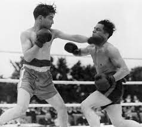
Boxeo del deporte de mas disciplina
Investigación
19/11/2022
Biografia Luchadores
Robert “Rocky” Balboa (6 de julio de 1946 Filadelfia, Estados Unidos) es un boxeador estadounidense en la película Rocky de 1976, en la que boxea en un club de peleas de bajo perfil llamado "la cubeta de sangre". Curiosamente, el campeón de boxeo Apollo Creed, al no encontrar un contendiente para su pelea estelar para conmemorar los 200 años de la independencia de Estados Unidos, busca en un diccionario de boxeo y le llama la atención el seudónimo con el que Balboa es llamado, "El Potro Italiano" , por lo que reta a Rocky para darle una oportunidad para ganar el título. A partir de esa pelea, Rocky logra lo impensable y su carrera empieza a subir de una forma inimaginable, gracias a su espíritu indomable y su determinación por ser el mejor. Posteriormente, la franquicia Rocky se desarrolla así: Rocky II (1979), Rocky III (1982), Rocky IV (1985), Rocky V (1990), Rocky Balboa (2006), Creed (2015) y Creed II (2018). Rocky Balboa tiene un peculiar estilo zurdo para boxear, pero en posteriores películas va cambiando su estilo. Desde aprender a boxear con la derecha, hasta aumentar su agilidad y su rapidez dando golpes.
Comenzó a boxear a los 15 años de edad debido a que su padre le dijo que “no tenía cerebro”, por lo que era mejor que aprovechara su cuerpo. A los veintiocho años Rocky vivía en Filadelfia, Pensilvania, entrenaba en el gimnasio de Mickey Goldmill para ser boxeador y se ganaba la vida trabajando para un delincuente local, Tony Gazzo. Su mejor amigo era Paulie Pennino, un tipo bastante pesimista y con mal carácter, pero que igualmente sentía un gran afecto hacia Rocky, su primer combate en el gimnasio de Mickey Goldmill fue contra Samuel Casado, y fue derrotado en el primer asalto. Posteriormente peleó contra el boxeador Spider (Araña) Rico y lo venció teniendo mayor influencia en los boxeos de gimnasios. Wikipedia
Saúl Álvarez soñaba con boxear en las grandes ligas mientras recorría las calles de Juanacatlán, Jalisco vendiendo paletas al lado de su padre. Por las mañanas, servía aguas frescas; por la tarde, tiraba ganchos en el gimnasio de José "Chepo" Reynoso.
Nació el 18 de julio de 1990 en San Agustin, a las afueras de Guadalajara. Su padre le enseñó la ética del trabajo y su hermano Rigoberto, la disciplina, cuando le obsequió sus primeros guantes de box a los 10 años.
El barrio de San Juan de Dios todavía recuerda a la familia Álvarez Barragán y sus paletas de frutas; pero Saúl dejó huella por sus propios méritos en el gimnasio Magdaleno Mercado, donde tuvo sus primeros entrenamientos bajo la supervisión de Chepo Reynoso.
Su piel clara y pecas, heredados de su madre, contrastaban en su barrio. No es secreto que Saúl sufrió bullying por parte de sus compañeros de colegio y de juegos. Le apodaron "El Canelo", pero escribir su propia historia en el ring le permitió convertir su apodo en símbolo de fortaleza.
Cumplió 15 años y, como regalo tardío, debutó profesionalmente el 29 de octubre de 2005. La Arena Chololo Larios de Tonalá fue el espacio que atestiguó por primera vez el estilo impecable de Álvarez: venció a Abraham González por nocaut técnico en el cuarto round, como presagio de la oleada de victorias futuras.
Desde sus inicios, el Canelo ya enfrentaba a rivales hipermusculosos y hasta 10 años mayores que él. Eso no era impedimento. Con 11 de sus 13 triunfos por nocaut, Álvarez obtuvo el título jalisciense de peso mediano en 2006. CaneloTeam
Floyd Joy Mayweather, Jr. apodado Money (Grand Rapids, Míchigan, 24 de febrero de 1977), nacido como Floyd Joy Sinclair,es un boxeador profesional estadounidense. Es hijo del exboxeador Floyd Mayweather Sr. y sobrino de los también exboxeadores Jeff Mayweather y Roger Mayweather, siendo además pupilo de este último quien fuera en su momento campeón mundial. Fue campeón del mundo en cinco categorías distintas: superpluma, ligero, superligero, wélter y superwelter; considerado durante mucho tiempo el mejor boxeador libra por libra según la revista The Ring gracias a una técnica muy depurada, desplazamientos constantes a lo largo del ring y capacidad para controlar el ritmo del combate a voluntad.
Fue considerado el deportista rey del pago por visión (PPV), ya que vendió a lo largo de su carrera cerca de 25 millones de eventos en esta modalidad de televisión por suscripción, por un valor global de más de 2.500 millones de dólares. Algunos de sus combates se encuentran entre los cuatro eventos más vendidos en la historia de los PPV´s: las peleas sostenidas contra Saúl "Canelo" Álvarez (2.2 millones), Oscar de la Hoya (2.4 millones), Manny Pacquiao (4.6 millones) y, el de su retiro definitivo, contra Conor McGregor (4.3 millones). Wikipedia
Todas
Le falta la revancha contra Mayweather
Todas
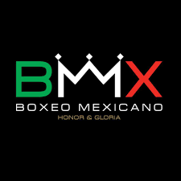 Boxeo en Mexico
3/feb/2023
Competencias en mexico
El pasado fin de semana tuve la oportunidad de participar en un emocionante torneo de box en Querétaro. Desde el momento en que entré al ring, supe que esta pelea sería una experiencia única en mi carrera como boxeador.
La multitud llenó el estadio y la tensión en el aire era palpable desde el primer round. Fue emocionante ver cómo la gente apoyaba a todos los peleadores, y yo estaba agradecido de ser parte de esa atmósfera vibrante.
A pesar de los desafíos que enfrenté durante la pelea, trabajé duro y mantuve mi enfoque en mi objetivo. Al final, salí victorioso y sentí una gran sensación de logro y satisfacción.
Este torneo de box en Querétaro será un momento que nunca olvidaré en mi carrera como peleador. Agradezco a todos los que vinieron a apoyarme y a los organizadores del evento por hacer que esto fuera posible. ¡Estoy emocionado de ver qué viene a continuación en mi camino como boxeador!
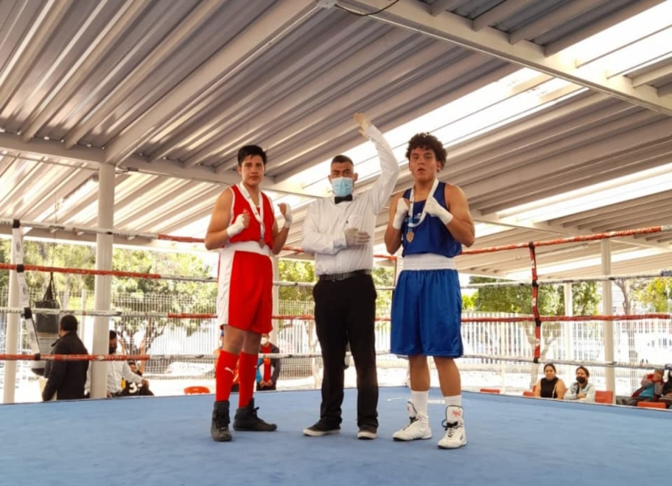
Campeonato de boxeo en Queretaro
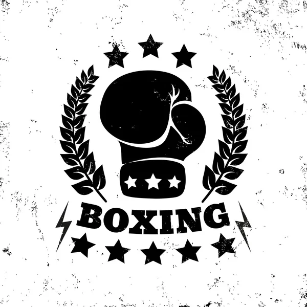Videojuegos
01/02/2023
Videojuegos de Boxeo
El boxeo es uno de los deportes más emocionantes y antiguos del mundo. A lo largo de los años, ha sido representado en varios videojuegos, algunos de los cuales han sido muy populares y han obtenido una gran cantidad de seguidores. En este blog, exploraremos algunos de los mejores videojuegos de boxeo de todos los tiempos.
Fight Night Round 3
Fight Night Round 3 es un videojuego de boxeo desarrollado por EA Sports y lanzado en 2006. Es considerado uno de los mejores juegos de boxeo de todos los tiempos. El juego ofrece un sistema de control intuitivo que permite a los jugadores lanzar una gran variedad de golpes y combinarlos para crear combos devastadores. También cuenta con una amplia variedad de boxeadores famosos, y un modo de carrera en el que los jugadores pueden crear y personalizar su propio boxeador.
Punch-Out!!
Punch-Out!! es un juego clásico de boxeo que fue lanzado en 1987 para la consola NES de Nintendo. El juego es conocido por sus personajes coloridos y caricaturescos, como el campeón mundial de boxeo, Mike Tyson. El juego ofrece una experiencia divertida y emocionante que requiere de habilidad y estrategia para avanzar en los distintos niveles.
Fight Night Champion
Fight Night Champion es el último juego de la serie de Fight Night y fue lanzado en 2011. El juego cuenta con una historia completa y emocionante que sigue a un joven boxeador que intenta hacerse un nombre en el mundo del boxeo. La historia se desarrolla a lo largo de varios años y presenta varios giros dramáticos que mantienen al jugador enganchado. El juego también ofrece un modo de juego multijugador en línea, que permite a los jugadores competir contra otros jugadores de todo el mundo.
Ready 2 Rumble Boxing
Ready 2 Rumble Boxing es un juego de boxeo arcade desarrollado por Midway Games. El juego se caracteriza por su estilo de dibujos animados y sus personajes exagerados, como el luchador "Afro Thunder" y el luchador "Boris Knokimov". El juego ofrece una variedad de modos de juego, incluyendo un modo de carrera y un modo multijugador. Ready 2 Rumble Boxing es conocido por ser un juego divertido y accesible que es fácil de jugar pero difícil de dominar.
UFC Undisputed 3
UFC Undisputed 3 es un juego de artes marciales mixtas (MMA) desarrollado por THQ. El juego ofrece una experiencia de lucha realista y detallada que presenta una amplia variedad de técnicas de lucha y movimientos. Aunque no es un juego de boxeo puro, es uno de los mejores juegos de lucha en general y cuenta con un modo de carrera completo que permite a los jugadores crear y personalizar su propio luchador.
En conclusión, el boxeo ha sido representado en muchos videojuegos a lo largo de los años. Estos juegos ofrecen una amplia variedad de experiencias y estilos de juego, desde los juegos de boxeo arcade hasta los simuladores de boxeo más realistas. Si eres un fanático del boxeo, definitivamente deberías probar algunos de estos juegos para experimentar la emoción
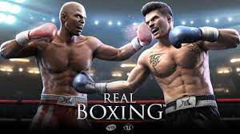
Real Boxing
Misterios
1/02/2023
Muerte Misteriosa
El boxeo es uno de los deportes más populares del mundo, con una rica historia que se remonta a siglos atrás. A lo largo de los años, se han producido numerosos eventos paranormales que han desconcertado y asombrado a los aficionados del boxeo. En esta entrada de blog, exploraremos algunas de las historias más fascinantes de cosas paranormales en el boxeo.
Una de las historias más conocidas es la de Sonny Liston, un boxeador legendario que fue campeón mundial de los pesos pesados en la década de 1960. En la revancha contra Muhammad Ali en 1965, Liston se desplomó en el suelo sin recibir un golpe aparente. La mayoría de la gente cree que Ali lo noqueó con un gancho de izquierda, pero muchos otros argumentan que Liston fue víctima de una fuerza sobrenatural. Algunos afirman que fue un golpe de vudú que lo dejó en el suelo, mientras que otros dicen que fue una maldición lanzada por un practicante de magia negra.
Otro evento paranormal que ocurrió en el mundo del boxeo fue en una pelea entre el campeón de peso medio de la Asociación Mundial de Boxeo, Sergio Martínez, y el boxeador británico Darren Barker en 2011. Durante la pelea, Martínez afirmó haber sentido una extraña presencia en el ring. Algunos espectadores también afirmaron haber visto una figura oscura y enigmática que parecía moverse en el cuadrilátero. Se cree que este evento fue el resultado de la energía negativa y la tensión emocional que rodea a la competición en el boxeo.
Otro incidente sorprendente tuvo lugar durante la pelea de Manny Pacquiao contra Miguel Cotto en 2009. Durante la pelea, Pacquiao afirmó haber visto a un hombre vestido de negro que estaba sentado en la esquina del ring. El hombre estaba parado cerca del entrenador de Cotto, pero cuando Pacquiao trató de señalarlo, el hombre desapareció misteriosamente. Algunos afirman que el hombre era un fantasma, mientras que otros creen que fue una alucinación causada por la tensión de la pelea.
En una pelea de boxeo entre el boxeador estadounidense Henry Maske y el alemán Graciano Rocchigiani en 1996, ocurrió un evento paranormal muy extraño. Rocchigiani afirmó haber visto una figura fantasmal con una capa negra y una guadaña en el ring durante la pelea. También dijo que el fantasma parecía estar flotando sobre él y que lo distraía. Aunque la figura desapareció rápidamente, Rocchigiani perdió la pelea y afirmó que la presencia sobrenatural lo había distraído.
En conclusión, el boxeo ha sido testigo de algunos eventos paranormales verdaderamente extraños y sorprendentes. Estas historias han desconcertado a los aficionados del boxeo y han generado muchas teorías e hipótesis. Aunque muchos de estos eventos pueden explicarse racionalmente, otros siguen siendo un misterio y continúan intrigando a la comunidad del boxeo y a los investigadores paranormales por igual.
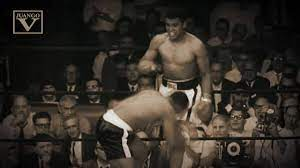
Muerte de Boxeador
Guerrero Boxeador
3/02/2023
Guerrero Epico
La multitud se había reunido en el estadio más grande del reino para ver la batalla más legendaria jamás vista en el mundo del boxeo. En un rincón del ring estaba el campeón indiscutible, un guerrero temible conocido por su velocidad, fuerza y habilidad inigualable. En el otro rincón estaba un aspirante desconocido, un luchador que había llegado desde tierras lejanas para enfrentar al campeón.
El aspirante parecía frágil y débil en comparación con el campeón, pero sus ojos brillaban con una determinación feroz. A medida que sonaba la campana, los dos boxeadores se acercaron al centro del ring. Los golpes empezaron a llover, el campeón desatando una tormenta de puñetazos veloces y poderosos, mientras que el aspirante esquivaba cada golpe con movimientos gráciles y elegantes.
La multitud rugía y vitoreaba mientras los dos boxeadores se enfrentaban en un choque épico. El campeón parecía invencible, con su fuerza y habilidad, pero el aspirante no se dejaba intimidar. Con cada golpe que lanzaba, parecía que su fuerza se multiplicaba, y pronto el campeón se encontró en problemas.
El aspirante no se detuvo, lanzando una lluvia de golpes a su oponente, y con un puñetazo final, envió al campeón a la lona. La multitud se quedó sin aliento mientras el aspirante se erguía victorioso. Había vencido al campeón indiscutible y se había ganado un lugar en los libros de historia como uno de los mayores boxeadores de todos los tiempos.
A medida que el aspirante alzaba los brazos en victoria, una explosión de fuegos artificiales iluminó el cielo nocturno, anunciando su triunfo a todo el reino. Los heraldos del rey le otorgaron el título de Campeón del Reino y le ofrecieron riquezas y tierras por su hazaña.
En resumen, la batalla más legendaria en el mundo del boxeo se libró entre el campeón indiscutible y un aspirante desconocido que demostró ser un verdadero héroe en el ring. Con su valentía y habilidad inigualable, el aspirante triunfó sobre el campeón y se convirtió en una leyenda en el mundo del boxeo.
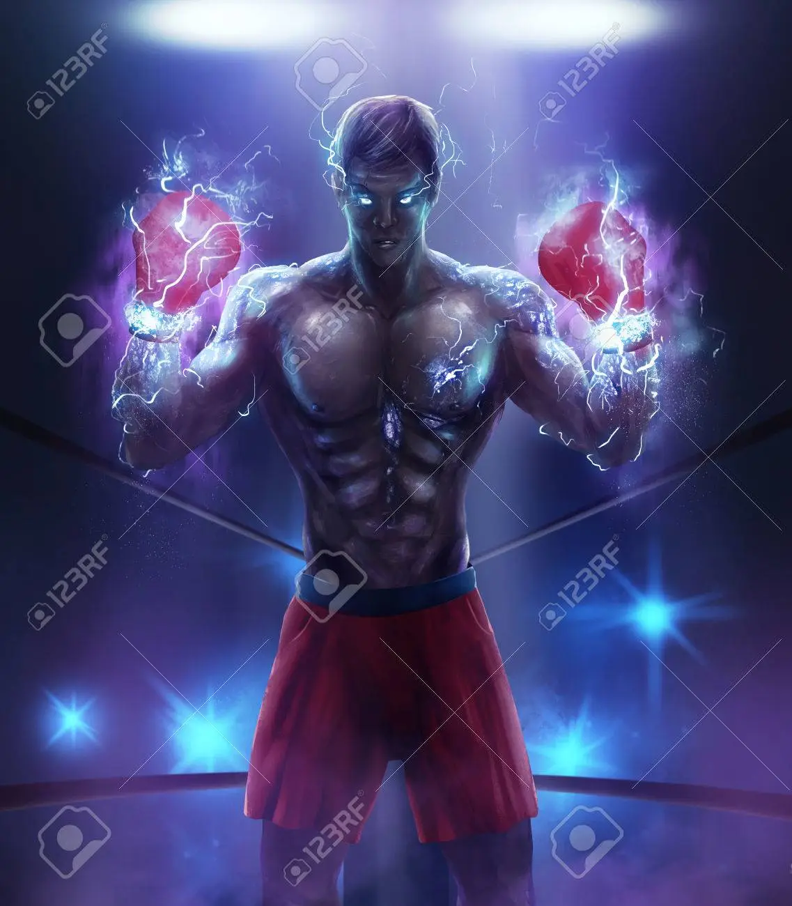
Guerrero Legendario
Primera batalla de boxeo
3/feb/2023
El Inicio de Todo
La historia del boxeo es larga y rica en acontecimientos, y la primera batalla de boxeo se remonta a la Inglaterra del siglo XVII. Durante esa época, el boxeo era un deporte callejero violento y sin reglas claras. Los luchadores podían golpear con cualquier parte del cuerpo y la lucha terminaba cuando uno de los dos contendientes quedaba inconsciente o moría. Fue en este contexto en el que se libró la primera batalla de boxeo registrada.
La primera batalla de boxeo de la que se tiene registro tuvo lugar en 1681 en la ciudad de Londres, y fue entre el noble Sir George Villiers y el famoso luchador callejero irlandés, Edward Sutton, también conocido como "El Conde de Rochford". La batalla tuvo lugar en la plaza de Covent Garden, y se llevó a cabo sin guantes ni protección de ningún tipo.
La pelea fue descrita por los espectadores como una de las más brutales y sangrientas jamás vistas. La multitud estaba formada por personas de todas las clases sociales, desde nobles y ricos comerciantes hasta vagabundos y delincuentes. Todos ellos se reunieron para ver a los dos luchadores enfrentarse en una pelea sin reglas y sin límites.
El combate comenzó con ambos luchadores avanzando hacia el centro del ring improvisado en la plaza. Villiers era el favorito de la multitud, ya que era un noble de alto rango y se esperaba que tuviera una gran ventaja en la lucha. Sin embargo, Sutton era un luchador callejero experimentado y astuto, y estaba decidido a dar la sorpresa.
La pelea fue brutal y violenta desde el principio. Ambos luchadores golpearon con toda la fuerza que pudieron, y la multitud gritaba y aplaudía con entusiasmo. Sutton demostró ser un oponente duro de roer, y logró resistir los primeros ataques de Villiers. Sin embargo, Villiers finalmente logró conectar un golpe limpio en la mandíbula de Sutton, que lo dejó aturdido y sangrando por la boca.
A pesar de la lesión, Sutton logró mantenerse en pie y seguir luchando. La pelea continuó durante varios minutos más, con ambos luchadores lanzando golpes poderosos y tratando de derribar a su oponente. Finalmente, después de más de media hora de lucha, Villiers logró conectar otro golpe que dejó a Sutton en el suelo, inconsciente y sangrando profusamente.
La multitud se volvió loca de entusiasmo, y Villiers fue declarado el ganador de la primera batalla de boxeo registrada. Sin embargo, la lucha tuvo consecuencias graves para ambos luchadores. Sutton sufrió lesiones graves que lo dejaron desfigurado de por vida, mientras que Villiers quedó con secuelas psicológicas que lo atormentaron durante el resto de su vida.
En conclusión, la primera batalla de boxeo de la que se tiene registro fue un evento violento y brutal que tuvo lugar en la Inglaterra del siglo XVII.
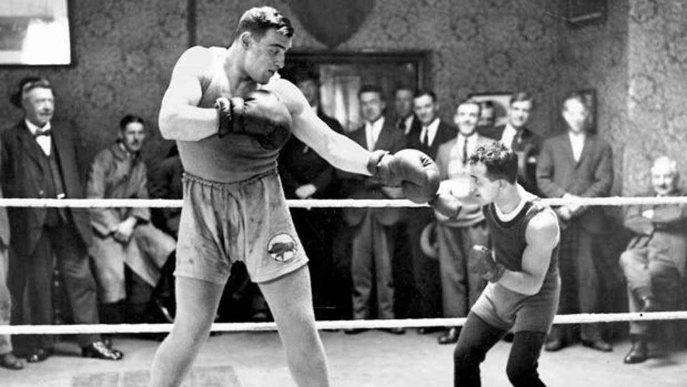
Boxeo en epocas de Mafia
Guantes de Boxeo
3/feb/2023
Los Mejores guantes de Boxeo
Los guantes de boxeo son un elemento esencial para cualquier boxeador, ya que brindan protección y comodidad a los puños durante los entrenamientos y los combates. Hay muchas marcas y estilos diferentes de guantes de boxeo en el mercado, por lo que puede ser difícil elegir los mejores para satisfacer tus necesidades. Sin embargo, hay algunas características clave que debes tener en cuenta al elegir un par de guantes de boxeo.
En primer lugar, es importante considerar el tamaño y el peso adecuados para tus manos. Los guantes de boxeo vienen en una amplia variedad de tamaños, desde los más pequeños para niños hasta los más grandes para adultos. Además, el peso de los guantes también es importante, ya que afectará la cantidad de protección que brindan a tus manos. Por ejemplo, los guantes más ligeros son ideales para la velocidad y la agilidad, mientras que los guantes más pesados brindan más protección y son ideales para los golpes más fuertes.
Otro aspecto importante a tener en cuenta es el material de los guantes. La mayoría de los guantes de boxeo están hechos de cuero o material sintético, y ambos tienen sus ventajas e inconvenientes. Los guantes de cuero son más duraderos y transpirables, pero también son más caros. Por otro lado, los guantes de material sintético son más asequibles y fáciles de mantener, pero no son tan duraderos como los guantes de cuero.
Además, es importante considerar la amortiguación en los guantes de boxeo. La amortiguación es esencial para proteger tus manos de lesiones y dolores durante el entrenamiento y los combates. Busca guantes con amortiguación de alta calidad que brinden una buena protección a tus manos y te permitan golpear con fuerza sin sentir dolor.
Por último, la comodidad es clave al elegir un par de guantes de boxeo. Busca guantes con una buena forma y una corrección adecuada para tus manos, que no te ajusten demasiado y te permitan mover tus manos libremente. Además, un buen par de guantes de boxeo debería tener un buen sistema de cierre que se ajuste bien a tu muñeca y brinde una buena sujeción.
En conclusión, elegir los mejores guantes de boxeo requiere considerar varios factores, como el tamaño y el peso adecuados para tus manos, el material, la amortiguacion, y la comodidad. Es importante elegir un par de guantes que se adapten bien a tus necesidades y te brinden la protección y la comodidad que necesitas durante tus entrenamientos y combates. Al considerar estos factores, puedes estar seguro de elegir los mejores guantes de boxeo para ti.
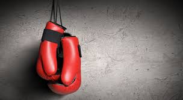
Imagen de guantes
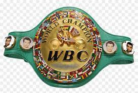
04/10/22
El top 10 de Box
Peso completo
Crucero (200 libras)
Semipesado (175 libras)
Súper Mediano (168 libras)
Mediano (160 libras)
Junior Mediano (154 libras)
Wélter (147 libras)
Junior Wélter (140 libras)
Ligero (135 libras)
Junior ligero (130 libras)
Existen 17 categorías de peso en el boxeo (18 para el WBC). Todas ellas fueron diseñadas para establecer
competencias justas entre los distintos peleadores de este deporte. La categoría de combate más pequeña
es de 105 libras (47.6 kilogramos), y escala hasta los pesos pesados con más de 200 libras (90.7 kilos).
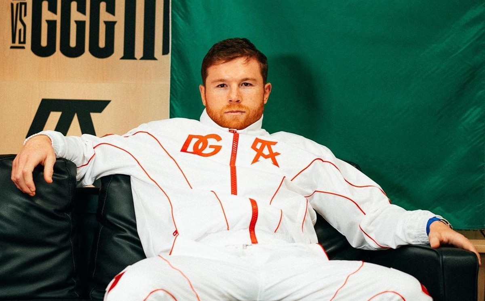
Canelo Alvarez Posando
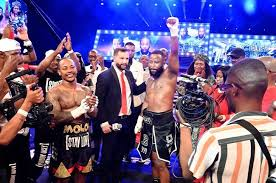
Los eventos son internacionales y competitivos.